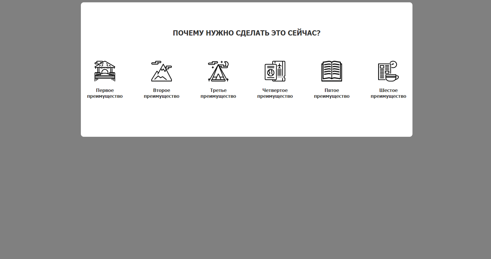

Урок 1
Урок 2
Урок 3
Урок 4
Урок 5
Урок 6
Урок 7
Урок 8
Урок 9
Урок 10
Урок 1. Этапы создания сайтов
В данном уроке рассказали про этапы создания сайтов и в каком месте цепочки находится верстальщик. Так же рассказали про прототипы сайтов. Домашним заданием было самому создать графический прототип сайта по продаже книг. К урокуУрок 2. Работа с графикой
В данном уроке нам показали как работать с графическими редакторами и макетами. В домашнем задании потребовалось вырезать все картинки с предоставленного макета. К уроку
Урок 3. Настройка рабочего проекта
В данном уроке нам рассказали из каких файлов состоит простейший сайт и как организовывать директорию проекта. В домашнем задании нам нужно было создать свой рабочий проект и загрузить его на хостинг. К урокуУрок 4. Основы HTML
В данном уроке нам рассказали про сновы веб страницы - язык разметки HTML. К уроку
Урок 5. Основы CSS
В данном уроке нам рассказали про то, без чего не оходится любая веб страница - язык стилей CSS. К уроку


Урок 9. Библиотека Bootstrap 4
Познакомились с библиотекой bootstrap, научились её подключать, её синтаксису и сверстали небольшой макет с её использованием. К уроку

Урок 10. Библиотека Bootstrap 4
Познакомились с библиотекой bootstrap, научились её подключать, её синтаксису и переверстали наш первый проект с её использованием. К уроку